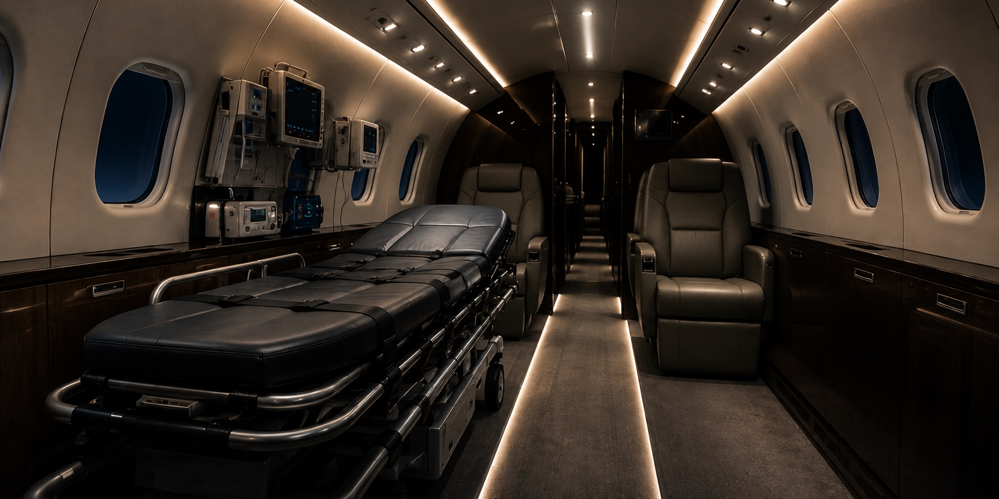

Intensive-Care
Ambulance Jet
For patients requiring a high level of clinical monitoring and care throughout the transfer.

Private medical aviation, coordinated with discretion from first conversation to safe handover.
Jettset Medical Aviation is not an emergency response service. If immediate emergency assistance is required, contact the emergency services in your location.From a simple repatriation to a complex critical-care mission, we match the right aircraft and the right medical team to every patient, every time.
For patients requiring a high level of clinical monitoring and care throughout the transfer.
Dedicated medical-aircraft transport for patients who require continuous professional care while travelling.
For eligible patients who are medically stable but unable to travel seated on a scheduled airline.
For patients able to travel commercially but requiring clinical assistance, monitoring or support during the journey.
Jettset coordinates the journey around the flight while our certified medical aviation partner manages the clinical and operational requirements of the medical transfer.
Our certified medical aviation partner provides and determines clinical capability and equipment across the global fleet.
A four-year-old patient in Niš was ventilator-dependent and required specialist treatment in Austin, Texas.
After a stroke and a serious pressure ulcer, a patient in Berlin needed to move closer to her daughters in Bavaria.
After decades in psychiatric care in New Jersey, a patient needed to move closer to his only family in Texas.
Our certified medical aviation partner determines aircraft, clinical capability and configuration for each individual mission.

Regional / Short-Field
Suited to regional transfers where flexible airfield access supports a carefully coordinated journey.


Light / Midsize Medical Jet
A representative midsize option for domestic and shorter international medical transfers.


Long-Range / Specialist
A representative long-range platform for complex international and specialist missions.

Configurations shown are representative examples based on real operator layouts. Actual aircraft, equipment and staffing are confirmed by our certified medical aviation partner for each individual mission.
Jettset acts as an air-charter broker and medical-flight coordinator. Aircraft operations, medical assessment, clinical personnel and onboard care are provided by our certified medical aviation partner.
Timing depends on medical assessment, aircraft and crew availability, documentation, route permissions and ground coordination. Jettset will establish the requirements with our certified medical aviation partner and provide the clearest available plan.
Fitness to fly and the required level of care are assessed by our certified medical aviation partner’s clinical team.
Where the patient’s condition, aircraft configuration and operational requirements allow, companion travel can be considered as part of the transfer plan.
Pricing reflects the route, aircraft, medical team and equipment, ground transport, permissions, availability, timing and other mission requirements.
Yes. Where included in the agreed transfer, Jettset can coordinate the journey around the flight while our certified medical aviation partner manages the clinical and operational medical-transfer requirements.
This initial enquiry opens the conversation. Clinical records must not be uploaded through this form.
Do not upload confidential medical reports through this form. If clinical documents are required, our team will provide instructions for the approved secure process.
When a medical transfer crosses cities, borders, clinical teams and transport providers, clarity matters.
Jettset brings the journey together — coordinating with our certified medical aviation partner so the patient, family and wider transfer remain connected from first enquiry through arrival.
25 Missions · 20+ Countries · 5 Continents
A four-year-old patient requiring continuous ventilation needed specialist treatment in Austin. The journey was coordinated bed-to-bed with paediatric intensive-care capability throughout.
A remote Bahamian island had no hospital or airfield services. The transfer connected a small medical shack to a United States trauma centre with continuous medical support.
Following a stroke and a serious pressure ulcer, a patient needed to move closer to her family. Medical air transport avoided an approximately ten-hour road journey.
A couple aged 88 and 89 both required medical repatriation after hospitalisation in Malta. The aircraft was configured for two patients and the journey was coordinated bed-to-bed.
After stabilisation in Morocco, the patient required repatriation to a clinic in France. The journey included ground ambulances, medical support, paperwork and discreet terminal access.
A 58-year-old patient with Guillain-Barré syndrome required continuous monitoring and a return to the United States before his visa expired. Routing, permissions and hospital admission were coordinated in advance.
A patient in long-term psychiatric care needed to move closer to family. A quieter small-airport journey avoided approximately thirty hours by road.
A baby requiring constant intubation needed treatment at a university hospital in Germany. A paediatric team and anaesthetist supported the ninety-minute flight.
A 60-year-old patient wished to return to family in Australia. A medical escort in business class was selected after review of her records and an in-person pre-flight assessment.
Severe sepsis made a long road journey unsuitable, while helicopter transport was ruled out by weather and technical limits. Medical air transfer offered the route to specialist care near family.
Direct international transfer
Learjet 60 · approximately 9,900 km · two fuel stopsReturn after specialist cancer treatment
Learjet 55 · ICU-equipped · companion on boardTransfer for hip surgery
Learjet 35 · bed-to-bed · daughter on boardDestination changed hours before departure
Challenger 604 · patient plus five · under six hours’ noticeCritical-care transfer at short notice
ICU-equipped ambulance jet · ground ambulances at both endsThird-degree burns transfer
ICU ambulance jet · bed-to-bed · Arabic-speaking doctorCommercial stretcher for a stable patient
Scheduled service · aviation medic and paramedicCommercial stretcher aboard an A380
Urgent visa and residence permit · rescue vehicle on arrivalRepatriation after a severe stroke
Challenger 604 · bed-to-bed · wife and son on boardTransfer following medical report
Learjet 36 · eight hours · doctor monitoredRecovery closer to family
Two rescue vehicles · doctors and paramedics · rehabilitation handoverRepatriation after a hip fracture
Learjet 35 · hospital handover by ambulanceNeurological rehabilitation transfer
ICU-equipped ambulance jet · trained medical teamBrain aneurysm transfer
ICU ambulance jet · bed-to-bed · two rescue vehiclesReturn following a stroke
Fitness to fly confirmed before commitment · baggage forwarded separatelyRepresentative aircraft and layouts. Final aircraft and medical configuration are determined by our certified medical aviation partner according to the mission.


A representative short-field platform where flexible airport access may support the wider transfer plan.


A representative light-jet option for shorter medical sectors, subject to clinical and payload requirements.


A representative midsize option for domestic and shorter international medical transfers.


A representative long-range platform for complex international missions and more substantial medical configurations.


A representative wide-cabin platform for particular long-range or multi-person specialist missions.

Jettset begins coordination as soon as an enquiry is received. Timing depends on the certified medical aviation partner’s assessment, aircraft and medical-team availability, records, travel documents, permissions and ground arrangements. A clear plan is provided as soon as those requirements are established.
Contact Jettset by phone, WhatsApp or the Medical Transfer Enquiry form. We gather the initial journey details, coordinate the clinical assessment with our certified medical aviation partner, and provide a no-obligation commercial proposal before commitment.
Pricing depends on route, patient requirements, aircraft type, medical team and equipment, availability, timing, permits and ground transport. Jettset provides a tailored proposal based on the confirmed mission requirements.
Coverage varies by insurer and policy. Families should confirm directly with their insurer. Jettset can provide the commercial and journey information required to support those discussions, but cannot determine policy coverage.
The clinical team of our certified medical aviation partner assesses fitness to fly and determines the required medical team, equipment and conditions of transport, consulting the treating physician where appropriate.
Requirements differ by jurisdiction and case. Jettset can coordinate communication, while the certified medical aviation partner may request a doctor-to-doctor consultation. Families should seek appropriate local guidance regarding access to records and discharge.
The certified medical aviation partner specifies equipment for the confirmed patient and aircraft. Representative capability may include patient monitoring, ventilation, defibrillation, oxygen, infusion support, suction, point-of-care analysis and specialist neonatal equipment where required.
The certified medical aviation partner determines the medical personnel required after assessment. This may include a flight doctor, nurse, paramedic or relevant specialist according to the patient’s condition.
Aircraft may include turboprops, light and midsize jets, heavy or wide-cabin aircraft. Jettset coordinates the charter; the certified medical aviation partner confirms the final aircraft and medical configuration according to routing, patient needs, equipment, companions and operational requirements.
Preferences can be considered, but the final aircraft must meet the clinical, operational, payload and routing requirements confirmed for the mission.
Yes, subject to the aircraft, medical installation, payload and mission requirements. Luggage allowances are confirmed during planning; separate forwarding can be coordinated where appropriate.
Often, yes. Acceptance depends on aircraft access, available space, battery type and the medical configuration. Details must be shared before aircraft selection.
In many cases at least one companion may travel, subject to the patient’s condition, aircraft configuration, medical-team requirements, payload and operational approval.
Jettset coordinates the journey and ground logistics around the flight. Where a companion cannot travel in the patient’s ground ambulance, alternative arrangements can be considered.
A family doctor may be able to travel as a companion if space and operational requirements allow. They do not replace the certified medical aviation partner’s assigned medical-flight team.
Medical transfers can be coordinated worldwide, subject to clinical assessment, aircraft availability, permits, airfield suitability, sanctions, local regulations and operational feasibility.
Where included in the agreed journey, Jettset coordinates ground transport at departure and arrival while the certified medical aviation partner manages the clinical and operational medical-transfer requirements.
For a medically stable patient who does not require an ambulance jet, the certified medical aviation partner may approve a trained medical professional to accompany the patient on a scheduled flight. Suitability is determined clinically and airline rules apply.
Yes, where the certified medical aviation partner confirms the appropriate neonatal or paediatric team, equipment, aircraft and transfer plan.
Potentially. The certified medical aviation partner assesses the condition, isolation requirements, aircraft configuration, permissions and protocols before confirming whether and how a transfer can proceed.
No. Medical Aviation enquiries are open to anyone. Every mission remains subject to clinical assessment, availability, operational feasibility and agreement of the transfer plan.
Yes. Jettset can discuss coordinated working arrangements with hospitals, insurers, case managers and professional partners, while clinical and aircraft-operation responsibilities remain with the certified medical aviation partner.